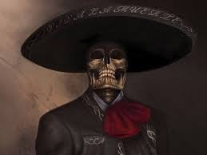

Al preguntarnos qué son las leyendas, podemos responder mencionando sus principales características que son:
Utiliza la fantasía o la ficción y la mezcla con la realidad de los hechos.
Es parte de la tradición oral, y viene siendo contada a través de los tiempos.
Usan hechos reales e históricos para dar soporte a las historias, pero agregan fantasías y se aprovechan de la imaginación para hacer historias llamativas.
Forman parte de la realidad cultural de todos los pueblos.
¨DIFERENCIAS CON LOS MITOS¨

Los Mitos, por su parte, son narraciones utilizadas por los pueblos antiguos para explicar hechos de la realidad y fenómenos de la naturaleza que no eran comprendidos por ellos.
Los mitos utilizan mucho la simbología, los personajes sobrenaturales, dioses y héroes. Todos estos componentes se mezclan con hechos reales, características humanas y personas que realmente existieron. Uno de los objetivos del mito es transmitir el conocimiento y explicar hechos que la ciencia aún no había explicado.
Así como los mitos, proporcionan explicaciones a los hechos que no son explicables por la ciencia o la lógica.
Estas explicaciones, sin embargo, son más fácilmente aceptadas, pues a pesar de ser fruto de la imaginación no son necesariamente sobrenaturales o fantásticas.
Sufren cambios a lo largo del tiempo, por ser transmitidas oralmente y recibir la impresión e interpretación de aquellos que la propagan.